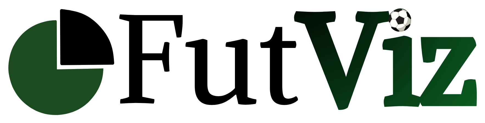
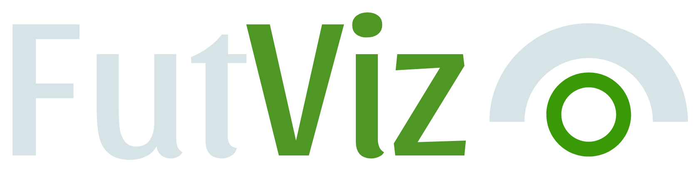

Saltar a la gráfica


Análisis exploratorio
Machine Learning
Análisis exploratorio
Rendimiento, estilo y nivel de jugadores y equipos de las 5 grandes ligas, con filtros y un explorador para cruzar cualquier par de variables.
Jugadores
Equipos
Ataque
Perfil xG90 / xA90
Goles vs. xG
Mapa de tiros
Creación
Asist. vs. xA
Pases clave vs. xA
Construir vs. producir
Centros vs. xA
Defensa
Quitar vs. faltas
Perfil defensivo
Ataque + defensa
Producción vs. recuperación
Crea tu gráfico
Ataque
Eficiencia de definición
Creación
Creación
Defensa
Defensa
Comparar
Nivel por liga
Crea tu gráfico